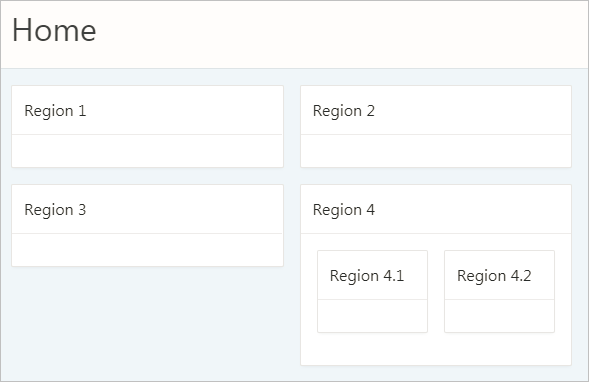

4.4 Regions
Configure page regions to provide navigational information for users.
- Page Structure
Page structure helps users navigate to the content they're interested in. - Report Regions
Report regions are more accessible if you define the report row header columns. - Interactive Grid Regions
Interactive grids are fully accessible with a keyboard. - Interactive Report Regions
Interactive reports benefit from data table labels and row-specific text for the edit icons. - Classic Report Regions
Classic reports benefit from data table labels and row-specific text for the edit icons. - JET Chart Regions
JET Chart Regions have multiple settings to improve accessibility. - Universal Theme Carousel Regions
The Carousel Container has a Timer setting that has an important bearing on accessibility. - Workflow Diagram Regions
The Workflow Diagram region is not currently accessible to screen reader users.
Parent topic: Developing Accessible Apps
4.4.1 Page Structure
Page structure helps users navigate to the content they're interested in.
Users of assistive technology benefit greatly if your APEX page has a well-defined page structure. If a page is well-defined and includes excellent Heading and Landmark structures, users of assistive technology can easily scan the page to orient themselves, and then immediately navigate to the content of interest.
This section describes how to create a well-defined page structure in APEX.
Parent topic: Regions
4.4.1.1 Landmarks
Learn about landmark roles and labels.
- Landmark Roles:
- allow developers to define the purpose of specific sections on a page
- include Navigation, Search, Main, and similar
- Landmark Labels:
- are announced, along with the role, to screen reader users
- are not always required depending on the circumstances
search landmark with an application label is announced as "Application search".
With landmarks, you do not have to define the hierarchy level like you do with headings because the level is automatically derived from the page structure. Correctly-implemented landmarks can be much more powerful than headings.
Example 4-1 Simple Landmarks
- Banner
- Navigation
- Main
- Complementary
- Content Information
Example 4-2 Nested Landmarks
- Banner
- Navigation (Breadcrumb)
- Main
- Search
- Region (Employees Report)
- Region (KPIs for Quarter)
- Region (Overdue Tasks)
- Region (Employee Performance Chart)
- Content Information
- Landmark Roles
Different landmark roles have different purposes. - Landmark Support in APEX
Learn about landmark support in APEX.
Parent topic: Page Structure
4.4.1.1.1 Landmark Roles
Different landmark roles have different purposes.
- Banner
- A banner landmark identifies application-oriented content at the beginning of each page within your APEX application, typically as the header of the page. Within APEX, this is usually everything contained within the top bar, but this can vary depending on your application, application theme, or template. For example, the banner could include the application logo, name, and navigation bar controls.
Pages usually only have one banner landmark. The most common pattern for APEX pages is for this banner landmark to come from the page template. Manually defining page regions as banner regions in APEX is rare.
- Complementary
- A complementary landmark is a supporting section of a page, at a similar level in the DOM hierarchy as the main content, but still meaningful when separated from the main content.
- Content Info
- A content info landmark identifies common information at the bottom (or footer) of each application page.
Pages usually only have one content info landmark. The most common pattern for APEX pages is for this content info landmark to come from the page template. Manually defining page regions as content info regions in APEX is rare.
- Form
- A form landmark identifies a region that contains a collection of elements, such as page items and buttons.
- Main
- A main landmark identifies the primary content of the page.
Each page should have only one main landmark. The most common pattern for APEX pages is for the main landmark to come from the page template. There is usually no need to manually define individual regions as main landmarks.
- Navigation
- Navigation landmarks provide a way to identify groups (for example, lists) of links that are intended to be used for application or page content navigation.
- Region
- A region landmark is a perceivable section containing content relevant to a specific purpose and sufficiently important that users likely want to navigate to the section easily, and have the section listed in a summary of the page. This is the most common landmark type for APEX regions.
You can use a region landmark to identify content that other named landmarks do not appropriately describe.
- Search
- A search landmark contains a collection of elements (usually page items and buttons) that create search functionality for content in the application.
Parent topic: Landmarks
4.4.1.1.2 Landmark Support in APEX
Learn about landmark support in APEX.
In APEX, landmarks are defined at different places in the framework, most commonly in the page template, within specific components, and at the region level. As an APEX developer, defining your regions with appropriate landmarks is essential to achieve good page landmark structure.
When working with regions, you have great flexibility in how these regions are (or aren't) included as landmarks on the page. This includes the following options in Page Designer:
- Use Landmark: Toggles whether to expose the region as a landmark. You may not want to expose the region as a landmark if, for example, it is just used for layout purposes in Page Designer, and there would be no value in exposing it to a screen reader user.
- Landmark Type: Define the type of landmark. This can either be the template default or custom for the current region.
- Landmark Label: When labeling landmarks, you can use the region title (default), or define a custom Landmark Label for the region.
Note:
If no label is defined, the region title is used as the landmark label.
- Unique on a page
- Not too long (preferably 3 words or less)
- An accurate description of the purpose of the region contents. For example,
Edit Employee Smith, orUseful Links.
Tip:
Do not use the landmark role in the label. For example, the label for a navigation landmark should beApplication, rather than Application Navigation, to avoid screen readers announcing navigation twice.
Note:
If you do not see these options for the regions on a page, it is because the current theme’s region templates do not define the#REGION_LANDMARK_ATTRIBUTES# substitution string under Template, Definition.
Theme developers should define the Default Landmark Type and Region Title HTML ID properties in the template in order to fully support landmarks. If you use Universal Theme, ensure you refresh the theme to the latest version. The latest version of Universal Theme defines these attributes for all region templates.
Interaction with Template Options
The region template option Header influences a region’s landmark definition. If this template option is set to Hidden, APEX assumes you do not want to expose this region title to assistive technology and hides the landmark.
Visualizing Page Structure with the Developer Toolbar
The Developer Toolbar includes an option to visualize the landmarks included on a page, to help in testing whether good landmarks have been defined.
Selecting Show Landmarks creates an overlay in the runtime of the page that shows the landmarks defined on the page, including their type and label. Here are some things to look out for when reviewing the page landmarks:
- Define Banner, Content Info, and Main landmarks once per page. If there is more than one of these on a page, change the landmark type.
- Check that labels meet guidelines for good labels: unique on a page, not too long, and not including the landmark role in the label.
- Define Banner, Main, Complementary, and Content Info at the top level. These landmarks should not be contained inside any other landmarks on the page. If any of these are contained inside other landmarks, you should move them or change the landmark type.
- Ensure each landmark type is appropriate for the content. For example, form items are in a Form landmark and search functionality is in a Search landmark.
- All perceivable content, including items, buttons, regions, and menus is contained in a landmark to ensure users cannot accidentally miss content. Content outside of a landmark region is an accessibility issue. You can fix the issue by re-positioning the content inside an appropriate landmark.
Parent topic: Landmarks
4.4.1.2 Headings
Learn about headings and heading levels.
Screen reader users may review all the heading elements on a page to gain an understanding of page structure. Defining a heading involves defining a heading level and heading text. A heading level is indicated by H, followed by the level number. For example, a third-level heading is H3.
Heading levels should be hierarchically nested, with one H1 on a page to uniquely identify the page contents, followed by any H2 (and subsequent) elements.
H1 Headings
Include a breadcrumb region on your pages to create a unique H1. You can use the Create Application Wizard to generate breadcrumbs automatically based on the hierarchy of pages defined in the wizard, or you can configure the breadcrumbs in your app manually. By default, the last breadcrumb entry on a page is the H1.
Alternatively, use the Hero region template in Universal Theme. This region template renders the region title as the H1 text on the page by default, which is useful if your current app layout and design does not warrant breadcrumbs.
Tip:
Only use one Hero region per page to avoid creating more than one H1 element.
H2 Headings
After H1, most region templates in Universal Theme render other content on the page with H2 around the region title
H1: Charts
H2: Region 1
H2: Region 2
H2: Region 3
H2: Region 4H3 and Other Sub-Region Headings
Universal Theme does not automatically support headings beyond H2, such as when you have sub-regions nested within an H2 region.

Description of the illustration h2_regions_with_h3_regions.png
By default, APEX applies H2s to nested sub-regions (regions 4.1 and 4.2 in the above example) in the Standard region template. This creates an accessibility problem because screen reader users may incorrectly believe that these sub-regions are of similar importance to the parent region or that the regions are not ancestral to the parent region.
H1: Charts
H2: Region 1
H2: Region 2
H2: Region 3
H2: Region 4
H2: Region 4.1
H2: Region 4.2To properly structure these sub-regions, you must duplicate the Standard region template, then use the Code Editor to manually replace H2 tags with H3s in the template definition.
Tip:
To copy a region, see Creating a New Template in Oracle APEX App Builder User’s Guide and select the As a Copy of an Existing Template option.
Changing the sub-regions to H3s only affects the structure of the element, not the style, which is what we want for accessibility.
This results in the following heading structure:
H1: Charts
H2: Region 1
H2: Region 2
H2: Region 3
H2: Region 4
H3: Region 4.1
H3: Region 4.2Important:
- While a copied template keeps the theme subscription, allowing you to refresh the theme after you upgrade APEX, the copied template does not upgrade automatically. You may need to manually change or re-copy the template after the refresh if you have made markup changes in that template.
- You must manually add an additional template for every deeper heading level in your app (H3, H4, H5...). We plan to make it easier to control the heading level without requiring an additional template in a future APEX release.
Region Titles
You should define meaningful titles for most region types because Universal Theme uses the region title as the heading text for the region.
Descriptive titles are essential for accessibility. By default, titles are visible on screen. However, sometimes you may not want a visible title for a region, such as when sighted users can quickly discern the region’s content from the surrounding page content. In this cases, you must still provide heading text for screen reader users. To do this, select the region. In Property Editor, open the Template Options, and set the Header attribute to Hidden but accessible.
Tip:
You can review and update all region titles in an app with the Edit Region Titles page. You should review all titles for accuracy and meaning, especially regions with the same title on the same page, which may be an issue depending on the context.
See Also:
Accessing Page Specific Utilities in Oracle APEX App Builder User’s Guide
Parent topic: Page Structure
4.4.2 Report Regions
Report regions are more accessible if you define the report row header columns.
Classic reports, interactive reports, and interactive grids all provide a way of defining the report row header column(s), which greatly improves screen reader experience. Row header columns are defined using the Value Identifies Row column attribute.
Define the column value, or combination of column values, that help identify the row of data. For person data, this could be the first and last name; for customer data, this could be the customer name, and so on.
When a screen reader user navigates to different rows of the report, the column, or columns, defined as identifying the row are announced as the row header as soon as the users moves to the new row. If Value Identifies Row is not defined, it is much harder for these users to orient themselves when moving around the report.
Template Component Reports
APEX$TITLE in the report body template as follows:<div role="grid"aria-label="#APEX$TITLE# grid"...If Value Identifies Row is toggled on a column, the aria-label is always rendered.
When the selector is a checkbox, set accLabelColumn to avoid a duplicate label error on columns.
When using JAWS, if forms mode is set to manual, JAWS uses standard JAWS commands to navigate template component reports. If forms mode is set to auto, users automatically switch into using APEX keyboard support.
Parent topic: Regions
4.4.3 Interactive Grid Regions
Interactive grids are fully accessible with a keyboard.
Introduced in Oracle Application Express 5.1, interactive grids combine powerful reporting with grid-based editing in a single component. Users can access all interactive grid functionality with just a keyboard, enabling all users to navigate around the grid and edit their data using the keyboard. For a complete list of keyboard support in interactive grids, see Interactive Grid Region.
Parent topic: Regions
4.4.4 Interactive Report Regions
Interactive reports benefit from data table labels and row-specific text for the edit icons.
Data Table Accessible Label
Oracle APEX generates the following SUMMARY text for the rendered data table:
Region = [region title], Report = [current saved report name], View = [current View], Displayed Rows Start = [current start of rows displayed, Displayed Rows End = [current end of rows displayed], Total Rows = [total number of rows]
This text identifies the data table, and therefore provides a great deal of contextual information to users of assistive technology.
Edit Icon Link Text
When creating a Report and Form, APEX generates the links between the two pages to allow you to edit specific records. The link text generated for all rows is Edit by default. You should make this text a meaningful label so that screen reader users (who listen to all the links on the current page) can understand the purpose of the link and where it takes them. The link text should be specific to the current row in the report. For example, for a report of customers, the link text could be Edit Customer: SMITH.
You can define the link text of an interactive report region by selecting the Attributes node, then in the Property Editor expand the Link column, set Link Column to Link to Single Row View or Link to Custom Target, and update the alt text in the Link Icon field.
Because there is no visible link text used, the link uses the inline image’s alt text as the text for the link. Note that you can use a substitution string such as #CUSTOMER_NAME# to target the column that best identifies the current row.
Parent topic: Regions
4.4.5 Classic Report Regions
Classic reports benefit from data table labels and row-specific text for the edit icons.
Data Table
By default, Oracle APEX generates SUMMARY text equal to the region title. This identifies the data table to users of assistive technology.
Edit Link Text
When creating a Report and Form, APEX generates the links between the two pages to allow you to edit specific records. The link text generated for all rows is Edit by default. You should make this text a meaningful label so that screen reader users (who listen to all the links on the current page) can understand the purpose of the link and where it takes them. The link text should be specific to the current row in the report. For example, for a report of customers, the link text could be Edit Customer: SMITH
You can define the link text of an interactive report region by selecting the Attributes node, then in the Property Editor expand the Link column, set Link Column to Link to Single Row View or Link to Custom Target, and update the alt text in the Link Icon field.
Because there is no visible link text used, the link uses the inline image’s alt text as the text for the link. Note that you can use a substitution string such as #ENAME# to target the column that best identifies the current row.
Parent topic: Regions
4.4.6 JET Chart Regions
JET Chart Regions have multiple settings to improve accessibility.
Oracle Application Express 5.1 introduced charts based on the Oracle JET Data Visualization components (JET charts). Releases prior to 5.1 used charts based on AnyChart, where there were many accessibility issues.
For more information about accessibility of Oracle JET Data Visualization components including support for keyboard and touch, see the Oracle JET documentation.
The following sections detail some chart settings that are particularly useful for ensuring chart accessibility.
Chart Title
The chart title displays in the chart region next to the chart. It is also the accessible label for the chart page section. In Page Designer, the chart title is defined in the chart Attributes node.
If there is only one chart displayed within a region, consider hiding the region title to avoid visual duplication. You can hide the region title by changing the Header region appearance setting in the Template Options dialog to Hidden but accessible. This removes the region title from the page but preserves the heading for assistive technologies (if users scan the current headings on the page to orientate themselves, they can perceive this title).
Tooltip
The tooltip displays when the mouse hovers over a specific chart section or the keyboard has focus on this section. In addition, the tooltip is the accessible label for that section of the chart. For example, when screen reader users navigate around the chart sections, this tooltip is announced.
- Adjust the other attributes displayed in the Tooltip group in Page Designer. This allows you to control display of Series Name, Group Name, Value, and Label information where applicable for your chart. For example, if the chart only has one series, then you may want to exclude the series name in the tooltip, so you would set Show Series Name to No.
- For a highly customized tooltip, set a column in your database table to be used as the source for the tooltip. You can configure this on the individual Series node nested under the chart in the Rendering tree.
Automatic Refresh Functionality
Developers can define an Automatic Refresh, Interval in the chart attributes which causes the chart region to automatically refresh according to the interval defined. Oracle recommends avoiding this functionality for accessibility purposes since this type of automatic refresh is very disruptive for users of assistive technology.
Parent topic: Regions
4.4.7 Universal Theme Carousel Regions
The Carousel Container has a Timer setting that has an important bearing on accessibility.
When using Universal Theme, combine the Carousel Container region template with multiple sub-regions to bring carousel-style functionality to your applications.
In the Carousel Container, use the Timer template option to select whether the carousel updates when the user selects a button or whether the carousel updates automatically after a defined interval. If you select any of the defined interval options, the user has no way of pausing or stopping the animation.
For improved accessibility, you should use the default option No Timer. This ensures users can choose when to switch to the next sub-region of the carousel.
Parent topic: Regions
4.4.8 Workflow Diagram Regions
The Workflow Diagram region is not currently accessible to screen reader users.
When using the Workflow Diagram region in a workflow details page, it is important to be aware that the workflow diagram region is not accessible to screen reader users.
Developers should provide the same information available in the Workflow Diagram region in accessible form.
Parent topic: Regions